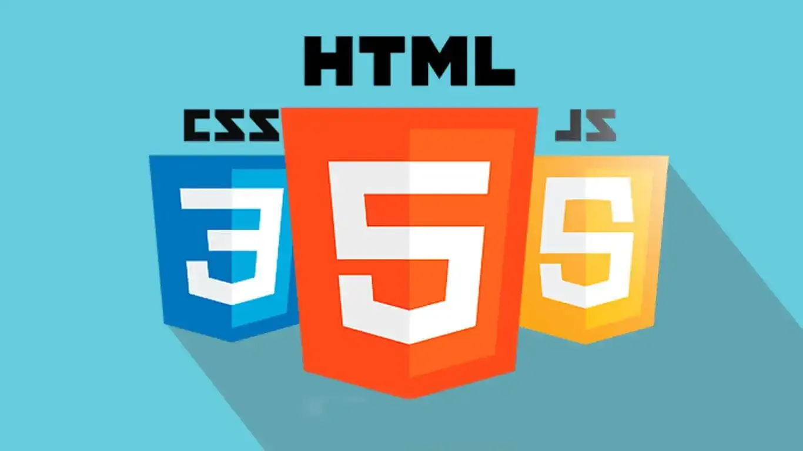

Tecnologia da Informação
A área de Tecnologia da Informação foi onde descobri um mundo de possibilidades. Aprendi que a TI não é apenas sobre computadores e códigos, mas sobre soluções, criatividade e inovação. Foi aqui que entendi como a tecnologia pode transformar realidades e conectar pessoas.
Minha Jornada na Tecnologia
1º Ano - Primeiros Contatos
No primeiro ano, tive meu primeiro contato com programação e lógica computacional. Aprendi conceitos básicos de algoritmos, estrutura de dados e como os sistemas funcionam. Foi desafiador, mas também muito empolgante descobrir esse novo universo.
2º Ano - Aprofundamento Técnico
No segundo ano, mergulhei em linguagens de programação, desenvolvimento web e banco de dados. Aprendi HTML, CSS, JavaScript e comecei a criar meus primeiros projetos. Foi o ano em que percebi que poderia transformar ideias em aplicações reais.
3º Ano - Projetos e Inovação
No terceiro ano, foquei em projetos práticos e nas tendências tecnológicas. Explorei inteligência artificial, desenvolvimento mobile e metodologias ágeis. Foi quando percebi que a TI seria parte fundamental do meu futuro profissional.
Projetos em Tecnologia

Introdução à Programação
Meus primeiros códigos e algoritmos. Aprendi lógica de programação, estrutura de dados e como pensar de forma computacional. Foi o início de uma jornada que mudou minha forma de resolver problemas.

Desenvolvimento Web
Criação de sites e aplicações web com HTML, CSS e JavaScript. Aprendi sobre responsividade, experiência do usuário e como construir interfaces que são tanto funcionais quanto bonitas.

Tecnologias Emergentes
Exploração de IA, machine learning, IoT e outras tecnologias que estão moldando o futuro. Entendi como essas ferramentas podem resolver problemas complexos e melhorar a vida das pessoas.